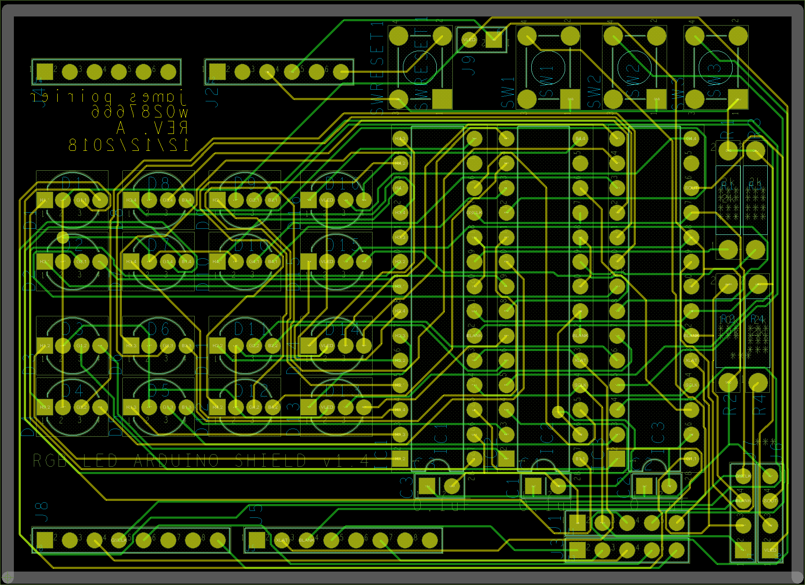
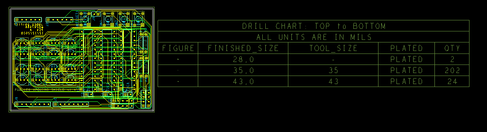
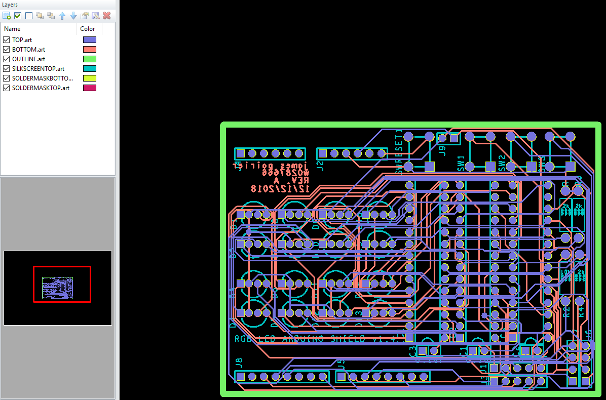

For my final assignment in my PCB design course, we had to create a PCB from start(schematic) to finish (GERBER files a manufacture uses) that if Olimex’s specifications out of a choice of 8 schematics, these 8 ranged in difficulty (some only had 5 components) but they all had a challenge (ex. Not in English / unfinished)
I chose the hardest; It had the most amount of components (and leads), and the schematic had inconsistencies. So many leads that the rules of the assignment: Traces have to be greater then 10mils, board must be smaller then 3.1x2.1 inch, 10vias max had to be modified. The one I chose was allowed 3.6x2.3 inches, 20vias and the traces could be as small as 8mils (maybe 5mils I don’t exactly remember)
I spent a lot of time trying to optimize the layout and in the end my board was 3.2x2.3 inches, had 10mils copper traces and only used 2vias. Im really impressed with myself on this project especially because there was a point where I had almost changed the board because I thought this one to be impossible
In the original schematic, there were a couple problems with the net alias’s that I hadn’t noticed on my first attempt. The RGB leads on the LEDs connected to the wrong wires (green -> blue). The originals naming conventions made creating the PCB quite hard, the headers and LEDs had random names; Every components wire went into one of the four 5-long headers. I learned that the headers where meant to be jumped to other headers, then to an Arduino’s header.
  The schematic library parts for the IC, LED, and the button were made by me, and all the PCB footprints (and padstacks) were made by me based on there datasheets dimensions and Olimex’s (except the resistors which are default allegro resistors).
orCAD: Because of the added difficulty of this assignment I did some research into functions that OrCAD capture and PCB designer had that I never used before. Things like Rats, PCB Router, custom smooth, Constraints. They did help, but not as much as I hoped. They often left things very messy, ignored constraints, or made things worse.